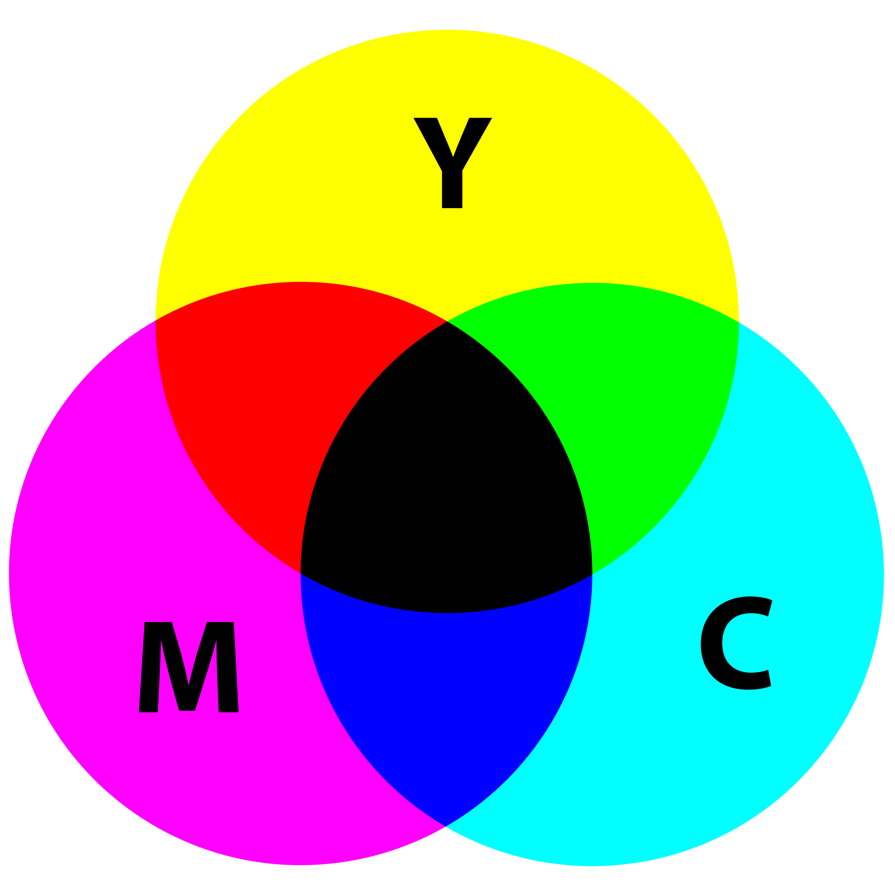

CMYK

Je kan naast kleuren op de computer ook kleuren op papier.
Dat is de ouderwetse manier, maar is nogsteeds mogelijk.
Net zoals op de computer heb je hier ook een kleurencirkel, deze cirkel is CMYK.
De C staat voor cyan, dat is een licht blauwe kleur.
De M staat voor magenta, dat is een rood/rozige kleur.
De Y staat voor yellow, dat is geel.
De K staat voor key, dat is de zwarte kleur die gemaakt wordt als je CMY mengt.
Men heeft daar een speciale naam voor gegeven, omdat de andere kleuren anders te snel op gaan.
Kleuren gebuiken
Je kan op heel veel verschillende manieren kleuren op papier krijgen. Hier komen een paar links met informatie, zodat je gezellig kleur kan gaan gebruiken!